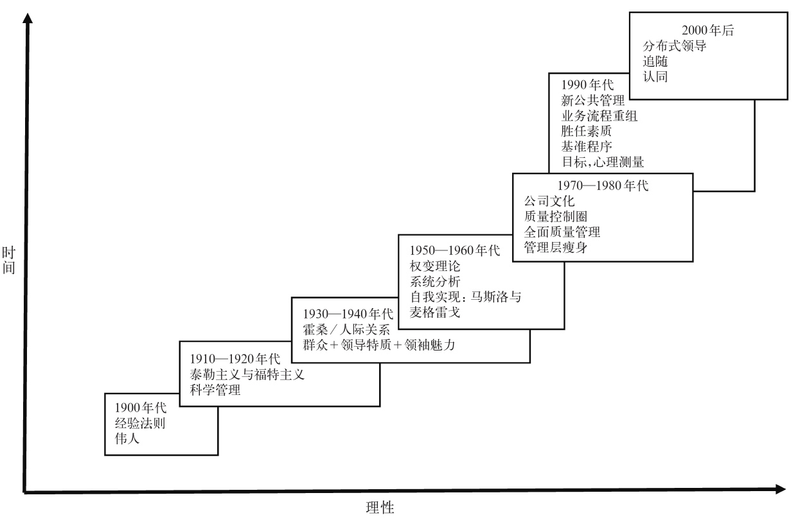
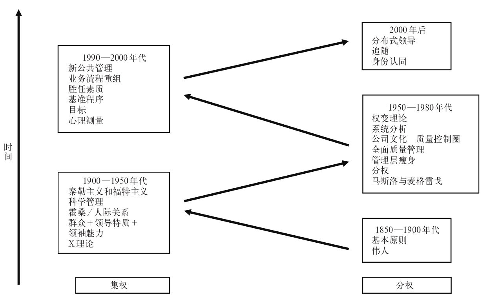
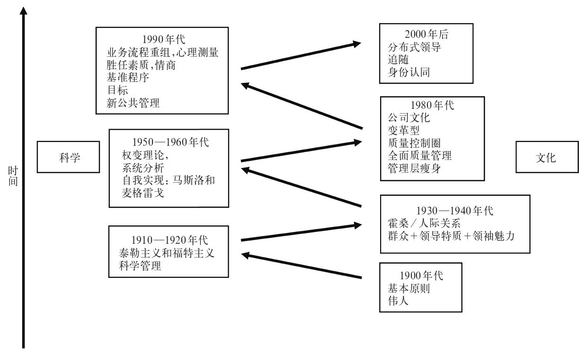
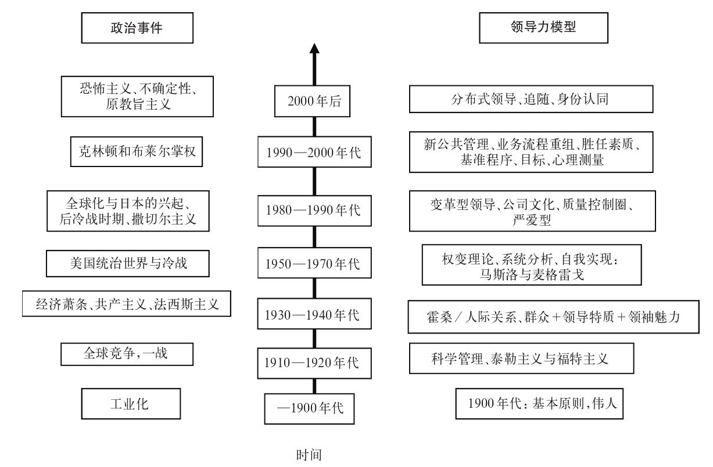

为何要为起源大伤脑筋？更何况，起源当从哪里算起？首先应当指出，对研究领导力的学者而言，“起源”乃是有记载的历史之初，而非智人之始。自有记载以来，任何具备相当规模和存续时间的组织和社团都曾有过某种形式的领导，该领导往往表现为一个人，但并非历来如此——通常是男人，却并不永远这般。这未必是说领导一贯并将始终至关重要或不可或缺，当然更不表明其雄性特质，但它却暗含着我们一直都有领导者这一事实。那么，我们当如何证明领导的确 不可或缺，或者领导形式和风格是否随时空发生了变化呢？
在很大程度上，我们关于古代领导力的知识主要依赖于书面文献的存在，这就引出了领导力的第一课：一般而言，历史都是由胜者书写的，这既包括获胜的军事领导者，也包括掌权的政治团体。在前一类别中，不妨想想为什么我们对亚历山大大帝或尤利乌斯·凯撒的胜利倒背如流，却对斯巴达克斯知之甚少，对整个古代不断撼动奴隶社会根基的成百上千次奴隶暴动更是几近无知。答案一目了然，那就是亚历山大和尤利乌斯·凯撒要么自己书写历史，要么吩咐专业人士为其撰写历史，而斯巴达克斯没有留下任何书面记录，在奴隶主的记录中，提到其他奴隶领袖之处更是寥寥无几。因此需要预先警告诸位，在阅读任何古典时期领导力的记录——当然，当代领导力的记录也是一样——时，需要对资料来源保持警醒。那些记录并非事实信息的中立记载；相反，它们是为实现某一特定目的而进行的偏颇记录。
在某种程度上，某个故事是否被记载下来，首先取决于该叙事是否包含被认为意义重大的内容。也就是说，我们倾向于只记录那些在一定程度上不同寻常或非凡罕见的事件。如此一来，就没有多少专著讨论两千年前的中国人如何经营一块小小的农场，也没有多少资料帮助人们了解同一历史时期，高卢的凯尔特部落在相对和平时期的领导风格。但我们有那个时期凯尔特人与罗马人作战的记录，也不乏同一历史时期中国战争首领的记载。然而，关于高卢人与罗马人之间战争的文本是罗马人的文本：首先因为凯尔特人基本上是没有文字的社会，主要还是口头文化，其次则是因为，大体说来，罗马人取得了胜利。同样，能够经过漫长的历史时期保留下来的东西往往是实体的文本和人工制品，而不是口头叙述，因此我们关于非文字社会领导力的了解往往是根据其他人的记录重建的，而那些记录往往是贬抑的。从我们根据考古记录对有文字以前的古代文明的了解来看，由博爱的领袖领导、与邻近部落和平共存的时期实在是凤毛麟角。
这样看来，战争显然是领导实践早期发展的一个关键部分。从如今中东地区的阿卡德的萨尔贡 [14] （约公元前2334—前2279）到埃及大帝拉美西斯二世 [15] ，从公元前3000年左右的克里特岛文明到同一时期印度河流域的哈拉帕文明，再到中国黄河流域那些筑有城墙的聚居地，我们知道，军事领导在人们追求生存和统治的过程中发挥了举足轻重的作用。同样，这也不是声称领导力起源于战争，或者军事领导是古代时期领导力的最重要元素——我们对这些时期的了解远远不够，无法对此证实或证伪。但的确如此，有些最重要的古典时期领导力文本要么与作战有关，也就是普鲁士军事理论家卡尔·冯·克劳塞维茨所谓的“以其他方法延续政策”，要么事关政策本身。古典时期和文艺复兴时期尤其如此，下面要先考察这两个时期，随后再转向近现代文献。
在欧洲以外，考底利耶 [16] 于公元前321年前后为如今印度境内的孔雀王朝撰写的《政事论》，列举了一系列供领导者考虑的实用建议。然而要说第一个不但在自己的时空范围——古代中国——声名赫奕，至今仍然 不断吸引商业执行官们从中汲取营养的指导性文本，当属孙武（公元前400？—前320） [17] 的《孙子兵法》。事实上，关于《孙子兵法》中那些格言警句的真正作者是谁，世人并无把握，其中很多有可能是由孙武的门徒和学生撰写的，该文本以对话的形式呈现——在“孙子”的鼓励下，好几个人物共同参与讨论——也支持了这一猜想。然而该文本关于领导力的主旨非常明确：“三军之众，百万之师，张设轻重，在于一人，是谓气机。”（《军争》20） [18] 确立了这一主旨之后，《孙子兵法》便以对话形式，为军事将领简明扼要地列举了最重要的战略战术元素。
在西方人看来讽刺却符合其源于道家的极简主义精华的是，《孙子兵法》中最为重要的启示之一居然是军事将领只有在不得已之时才应开战，因为“是故百战百胜，非善之善者也；不战而屈人之兵，善之善者也”（《谋攻篇》）。这样看来，孙武认为要取得胜利，就必须讲究战略，因为兵法就是如何避免不必要的 冲突的艺术。
“阙”是这一哲学的必然结果：如果不得不作战，就需要尽全力避免正面冲突，因为那会占用大量资源并造成大量伤亡，且要比打乱敌军的作战计划或破坏其军需危险得多。如果必须与敌军正面冲突，且没有把握一举击溃对方，那么就应该“遗阙”，给敌人留下一条退路，否则敌人就不得不死战到底，而那样一来最终的结局如何，就很难说了。
另一个看似矛盾的建议是不给自己留退路：换句话说，全力以赴，背水一战。孙武说：“帅与之期，如登高而去其梯。”这看似与遗阙规则相反，但退路是留给敌人，而不是同盟或追随者的，因为如果同伴们都觉得受到威胁又看到了一条方便的退路，很有可能选择全身而退。然而如果没有退路，也就是到了孙武所谓的“死地”，他们就不得不全力为生存而战，正是追随者为领导者拼尽全力的这一点，体现了孙武著作中的道家思想。如他在《九地篇》中所说：“投之无所往，死且不北，死焉不得，士人尽力。”
孙武还固执地认为，军中事务应该留给军事专家处理，掌握政权者不该插手。“白大人而救火也，未及返命而煨烬久矣。”（《谋攻篇》） [19] 或者如《九变篇》中指出的，“君命有所不受……苟便于事，不拘于君命也”。 [20]
大约与孙武在中国向军事将领传授兵法同时，柏拉图（公元前427/428—前347）警告希腊人，民主产生的政治领导与其说代表希腊文化的繁荣，倒不如说对希腊文明构成了直接的威胁。在柏拉图看来，遴选领导者的选举制度根本未能形成严肃讨论的论坛，而是产生了一个马戏团，因为它鼓励领导者们去迎合暴民——“危险的大型动物”——的最低级的本能，“暴民”大量出现在柏拉图这一领域的很多著述中。柏拉图在《理想国》中指出，暴民会愿意选出给自己承诺最多的随便什么人，哪怕这会让他们所处的社会（他比作一条船）面临险境。因此，民主无法确保船只在最适合当船长（柏拉图所谓的“哲君”之一）的那个人领导下顺利航行，反而确保了大众煽动家大获全胜——这必然会把船只直接引向毁灭的礁石。
但如何识别最适合领导之人呢？在柏拉图看来，不言而喻，只需考察一下人们的专长便可识别出他们的技能：我们不会请园艺师为我们造船，也不会请农民来管理经济。然而让柏拉图深感失望的是，一旦涉及“道德”知识，暴民们便个个自称专家，因而也就没有专家了。正是出于这个原因，柏拉图坚决反对诡辩家和教授修辞学或公共演讲的伊索克拉底 [21] ，因为这只会鼓励人们更看重形式而非内容。柏拉图最为害怕的是，即便本打算以道德的方式领导、为社会谋福利的人，也会受到该制度的腐蚀，因为领导者对于社会的良好运作至关重要，而腐败的领导者必然会毁灭“他”自己所在的社会。柏拉图的学生之一亚里士多德（公元前384—前322）也认为雅典的确深受腐败领导者之害，但他对这个问题的反应与柏拉图不同。他的著作《修辞学》在一定程度上揭露了“公共演说的伎俩”，亚里士多德认为，它们已经腐蚀了雅典的公共生活。
亚里士多德之后大约1800年，地中海的同一地区出现了另一本书，不但成为那个时代关于领导力的首屈一指的著述，在我们的时代也有着不可撼动的地位。这不是说尼科洛·马基雅维里的《君主论》甫一问世便颇受欢迎，恰恰相反，它是16世纪最不受欢迎 的指导性文本。对马基雅维里本人而言，这无疑是双重讽刺。首先，因为他撰写《君主论》是为了在自己的前雇主那里恢复一些政治信任和声望；其次，因为马基雅维里撰写的是一部说明性而非指导性著作。换句话说，马基雅维里认为他描写了当时政治世界的本来面目，而不是在某个神秘而无法实现的乌托邦里，政治应该以何种面目出现。正是贯穿《君主论》始终的这种政治现实主义导致它立即受到当时的宗教和政治领袖的谴责，当然这也是它在今天大受追捧的原因。按照马基雅维里的说法，他撰写这本书的依据不是理论而是历史事实，但它却被天主教会列为禁书，未收录在教会的《书目索引》中。
《君主论》写于1513—1514年，彼时马基雅维里的家乡因内战外侵而四分五裂。马基雅维里试图为所有的政治领袖，尤其是为美第奇家族，即他的恩主和佛罗伦萨昔日的名门望族，撰写一部指南。因此，《君主论》不光是为讨好美第奇家族而写，更是呼吁人们拿起武器保卫佛罗伦萨以及通过占领佛罗伦萨来保卫意大利免受“野蛮人”入侵，他所谓的“野蛮人”是指西班牙和法国侵略者。
马基雅维里在《君主论》中树立的一个主要榜样，是1492年成为教皇亚历山大六世的罗德里戈·博尔贾的私生子切萨雷·博尔贾 [22] 。切萨雷·博尔贾带领罗马教宗的军队威胁剥夺佛罗伦萨的独立，但马基雅维里在切萨雷身上看到了一种全然不同的领导力，此人杀死了自己选拔的军官雷米罗·奥尔科，因为后者在治理罗马尼阿时显得过于残酷了。马基雅维里回忆道：“……在一个早晨雷米罗被斫为两段，曝尸在切塞纳的广场上，在他身旁放着一块木头和一把血淋淋的刀子。这种凶残的景象使得人民既感到痛快淋漓，同时又惊讶恐惧。” [23] （第七章）切萨雷随后又邀请那些密谋反对他的人前来参加晚宴，并在其饕餮之时命人把他们全都杀了。马基雅维里因而将切萨雷作为真实政治的良好典范，因为他认为，切萨雷通过有选择地使用暴力而恢复了和平。当时的大多数领袖都公开鼓吹另一条道路，即行事磊落，光明正大，但在马基雅维里看来，在一个不道德的世界，光明磊落只能导致最卑鄙的小人执掌大权。他在《君主论》中指出：“因为一个人如果在一切事情上都想发誓以善良自持，那么，他厕身于许多不善良的人当中定会遭到毁灭。所以，一个君主如要保持自己的地位，就必须知道怎样做不良好的事情，并且必须知道视情况的需要与否使用这一手或者不使用这一手。” [24] （第十五章）因此：
（第十七章） [25]
事实上，马基雅维里并不是说领导者都应该卑鄙龌龊，而只是说为了保护社会的利益（这一点在《论李维》中有更加明确的论述），君主必须不择手段——为的是顾全大局。因此人的行为应该放在具体的形势背景中考虑，而不该放在某个神秘的道德世界中单独分析。当然，问题是如何定义“大局”。
而在回答他自己提出的设问句“究竟是被人爱戴比被人畏惧好一些呢？抑或是被人畏惧比被人爱戴好一些呢？”时，马基雅维里毫不含糊地选择了站在畏惧一边。
（第十七章） [26]
托马斯·卡莱尔——很多人认为他是关于领导力主题的首位“现代”作者——曾在1866年就任爱丁堡大学校长的就职演说中，兴奋地提到了马基雅维里和奥利弗·克伦威尔两人，卡莱尔将克伦威尔比作英国内战时期绝对必要的诸多君主之一。事实上现代时期领导力研究的兴起——与工业社会的兴起同步——可以追溯至卡莱尔在更早的1840年发表的演说，因为崇拜和迷恋历代“伟人”，他认为普通人的角色纯属“多余”。他所建构的个人英雄主义模型代表了维多利亚时代人们关于领导力的普遍设想：它不可更改地是阳刚的、英雄的、个人主义的，有着规范化的倾向和本质。它源于你依据自己所处时代的文化规范应该做些什么；的确，跟古典时期和近代零星出现的同一模型别无二致。
该模型似乎成为整个19世纪下半叶的主导模型，直到19世纪末，第一个专业管理团队开始取代原始的“英雄主义的”所有人——经理人时，才受到质疑。那以后人们认为，随着工业规模和后向合并（backward integration）水平开始产生巨型工业（特别是在美国），需要大量行政管理人员来确保组织连贯性，领导力的背景——因而也包括其“要求”——从英雄主义的个人转变成为理性主义的系统和过程。这类组织领导力模型中有很多都来源于军队、文职机关、邮局和铁路，大多将领导力确定为正式等级结构内部的行政职位。继而随着这些庞然大物所释放的劳动生产率的增长，开始鼓励激烈的市场竞争并侵蚀利润率，人们的注意力又很快转向了节约成本战略和科学管理。科学管理的创始人F.W.泰勒就专注于管理层不惜损害工人的利益而严格控制知识，在细化劳动分工的同时，大大降低各个工作岗位所需的技能。在这种情况下，领导力就被重新设计为“知识领导力”，领导者成为大量生产知识的保有者，因而产生了可以控制生产的权力——与以前由作坊工人对生产加以控制形成了鲜明对比。
1920年代的经济萧条正好与领导力模型的下一个重大转变在时间上重合，就本书讨论的目的而言，那一次重大转变又重新强调规范性权力的作用，偏离了前20年一直占主导地位的科学系统和过程的合理性。这个向以往的规范性模型的“回归”最初起源于1920和1930年代在通用电气公司位于芝加哥附近的工厂进行的霍桑实验。在那里，为优化劳动条件而进行的泰勒式科学实验据称产生了第一个困扰，继而让人们意识到，劳动是无法客观测量的，因为测量行为本身就改变了经验，因而也改变了那些被测量之人的行为。这一所谓的“霍桑效应”后来又引发了一系列相关试验，最终先是说服了通用电气公司，继而又说服了整个美国各家公司的管理层，让他们明白工人只能通过规范而非理性获得激励，他们倾向于集体主义而非个人主义的组织文化。
可以说，上述交替出现的领导力模型——先是19世纪下半叶卡莱尔的“规范”模型，接着是20世纪前20年泰勒和福特的“理性/科学”模型，继而又被霍桑实验的“规范”模型回归所取代，而这最后一种模型又在1930和1940年代被巩固成为“人际关系”方法——反映了两个更为笼统的现象：首先是当时的经济周期，其次是当时的政治模式。这些经济周期构成了康德拉捷夫 [27] 颇有争议的经济长波理论；政治周期倒没有那么多争议，也更有趣，因为我们似乎不可能脱离1920年代末和1930年代全球大规模兴起的共产主义和法西斯运动而单独讨论工业，更有可能的情况是，在这些运动中表现出来的领导力模型，通过在当时看来合理的一种时代精神被折射在工业中。换句话说，在由规范性地依附于集体意志——不过这种集体意志体现在对党派领袖近乎崇拜的忠诚中——的群众政治运动风起云涌的时代，人们似乎自然而然地认为，领导某个工业组织的最佳方式是反映出这样一种假设：应该通过规范而非理性的方式组织劳动——组织劳动之群体的领导者应该是代表群众的明显意愿的原型人物。
第二次世界大战结束之时，经济再次出现繁荣，在西方开始占主导地位的领导力模型也再次从群众和英雄的规范性偶像崇拜——表现为共产主义和法西斯掌权——转变为对情境的理性分析占优势的模型，这种科学方法曾经大大激发了主要战胜国即美国的作战能力，也是根植于那个国家的个人主义文化内部的一种方法。于是就有了美国的自我实现运动的兴起，尤其体现在马斯洛的“需求层次”中，它强调领导者需要先解决追随者的健康和安全需求，然后追随者才能够关注“更高级”的需求；同时也体现在麦格雷戈 [28] 用“Y理论”（人性是合作的，因此应当通过鼓励来领导）替代“X理论”（人性是自私的，因此应该通过控制来领导）的思想中。
随着对特质理论越来越多的批评，以及密歇根大学和俄亥俄州立大学的研究工作，领导力研究的趋势又偏离规范，回到对情境的合理理解上。这两所大学的研究工作为一个激进的新动向权变理论奠定了基础。在权变理论的总体框架之下，依靠有可能永无穷尽的特质和超人魅力的理论脆弱性——表面上——受到了沉重打击。自那以后，人们真正关心的不再是由一个最有魅力的领导者来领导一群最崇拜他的追随者，而是能够合理地理解形势，并做出适当的反应：也就是我们在上一章讨论过的论调。
自这一权变理论的初期以来，我们经历的“进步”历程先是回归，强调有着彼得斯和沃特曼 [29] 喜爱的（规范性）“卓越文化”的领导者有多重要，继而又到了1990年代企业重组革命的（理性）教育，最终来到了当代变革型和激励型领导理论的发展，其背景自然包括恐怖主义、全球变暖、“信用紧缩”以及神权政治和宗教原教旨主义的兴起。这些转变也引起了1980和1990年代的新公共管理运动，举例来说，在该运动的背景下，通过市场的扩张以及目标和业绩管理系统的约束，英国的公共部门由懒散官僚的巨无霸转变成为反应迅速的服务提供者。
以上这些，再加上人们对情商的重要性、身份认同领导以及制定激励性远景和使命的关注，似乎使得起初的规范性特质方法的回归成为必然：看起来，我们是朝着过去前进了一步。因此，近年来我们（再度）受制于激励型个人，这些人天生拥有当代领导者碰巧都有的各种基本胜任素质，而在出现灾难性后果时，人们也会归咎于那些素质。
本文关于领导形式的二元转换的论点并未得到普世公认。的确，对这一规律——如果真有规律可循的话——的理解方式不一而足。首先，随着时间的流逝，我们对领导力的理解只能越来越趋于复杂和理性，图7显示了这种递进的改善。学习历史的学生定会在这种发展态势中看到辉格党式的乐观激进，即事物总体来说朝着越来越好的方向发展。另一方面，有两种二元模型表明，人们对变化的解释截然不同：图8显示了领导力的集权和分权模型的钟摆式交替——这通常都是建立在关于组织学习和游戏的假设之上的，因此随着制度僵化的开始，曾经一度高效的模型会变得无效。相反，图9则保留了二元模型，但其因果机制与构成语言的二元结构有关：夜/昼，黑/白，死去的/活着的，等等。在这里，科学与文化的关系对变化构成了天然的语言屏障，一旦某种领导风格的效能被消耗，钟摆就会朝相反的语言学方向摆动，直到该模式也走到了尽头为止。
其次，某种政治模型不但会将变化置于语言的对立界限之中，而且会将它置于更广阔时代背景的政治策划之中，在后一种情况下，看似“正常”的东西只会在当时的政治意识形态框架之下才显得正常。图10显示了这样一种视角。因此，泰勒主义之所以成为风尚，不仅仅因为它是科学的因而也是理性的，而且也因为在一个又一个科学界的突破逐渐改变劳动世界、种族改良运动开始在美国文化中占据优势的时代，人们会自然而然地认为存在一种配置、控制和领导劳动的最佳方式。同样，当欧洲政治开始陷入共产主义和法西斯主义的圈套，人们也似乎必然会认为，最佳的领导方式不是通过对个体的科学管理，而是通过魅力型领袖对情绪化的群众加以操控。第二次世界大战一结束，当时的霸权力量美国在各处复制了自己的科学和个人主义管理方法，将其作为默认的领导力模型，只有当日本的威胁在1980年代（重新）出现时，才又发生了朝向更偏重文化的领导观念的大转变。而当这些在1990年代再次失去动力时，随着新公共管理和目标测量等做法占得上风，风向又转回到了整个谱系的科学一端，其在21世纪的前十年再次被颠覆，因为世人对全球变暖、金融灾难、政治腐败、恐怖主义和犯罪的道德恐慌不断扩散，将争论焦点再度导向了身份认同领导等方法的文化派系。

图7 随时间变化越来越趋于理性的领导力

图8 二元模型A：集权—分权

图9 二元语言模型B：科学与文化

图10 政治时代精神
最后，很有可能根本就没有什么规律可言，这些只是学者和咨询顾问们传播的历史碎片的集合，他们希望最好能对某个没有意义的事物建构意义，或至少能出售自己建构的规律作为谋生手段。领导力的历史或许根本就是一个失败接着另一个失败，但它本有可能更糟：它本有可能是同一个失败不断重复。所以我们不妨努力一下，起码能避免这后一种更糟的情况发生。